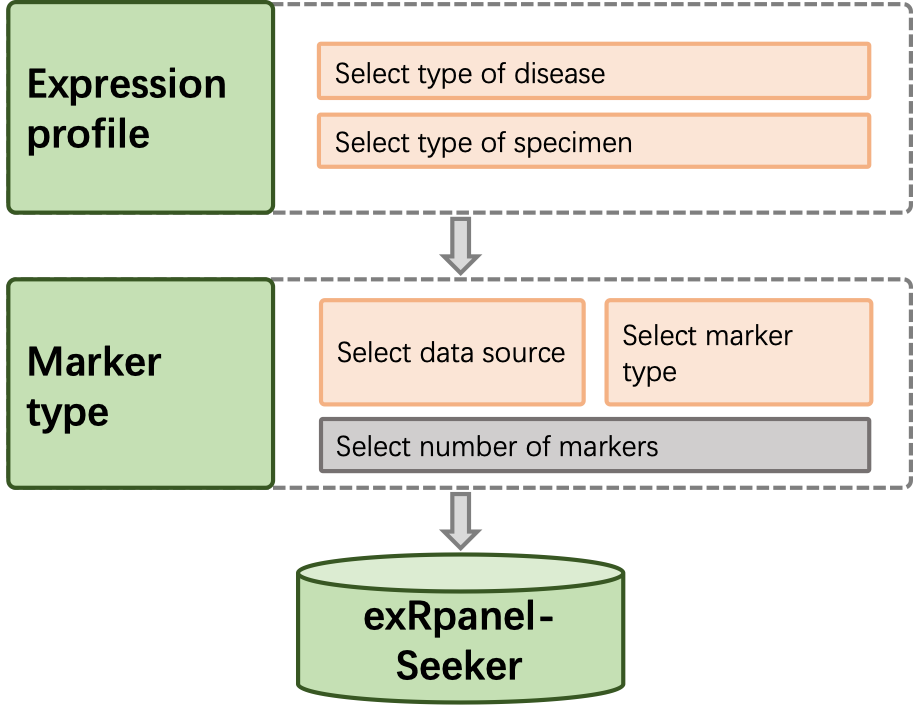

exRpanel-Seeker for Liquid Biopsy

Step 1: Select data matrixs
Disease
Specimen
Step 2: Select data source
Data from
Step 3: Select marker type
RNA category
Step 4: Select number of markers
Number of markers

Instructions
Using this website is easy:
1. Select data matrix
2. Select data source
3. Select marker type
4. Select number of markers you want to get.